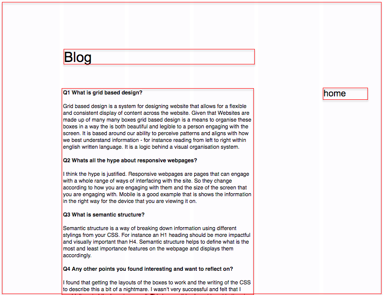

Design to Web
Q1. As if talking to a non-tech friend, discuss:
1.1 What a responsive site is, and why responsiveness is important.
A responsive site is a website that can respond the full range of screen sizes from. A responsive will change it's layout specifically to the screen you are viewing it on to best communicate for that screen size. Responsiveness is important to ensure consistent usability and experience across all devices. This ensures that everyone no matter what device they are using can use your website.
1.2 What mobile first design is, and why it's important.
Mobile first design is the notion of designing beginning with the smallest screen. The smallest screen has the least screen real estate and is navigated with fingers. Fingers are less precise than other interfaces, such as a mouse. Mobile first design forces you to essentialize your design and ensure that it is communicating at its most primitive form. This ensures design rigour as you move to designing on larger screens.
1.3 What frameworks are, and their pros and cons.
Frameworks - such as skeleton and bootstrap - are existing packets of CSS code. They are basic templates to assist rapid prototyping of websites. These parcels of code allow for flexible responsive sites to be built with great variety. Their advantages are that you can develop a prototype rapidly and they are also quite light from a computing perspective. Their disadvantages is they have a limited amount of customisation. They might be restrictive if you are doing something more bespoke. You are also only learning the framework - and not the ability to form one yourself.
1.4 What a wireframe is and why we use it.
A wireframe is a rapid sketch of the content that will be on your webpage. This content might be title, images, body copy etc. The wireframe assists you in breaking down this content to convert it to semantic html tags. You can use these tags to write your html content. It is also a helpful design prototype that you can begin to asses the user experience, functionality and aesthetic of your webpage. Below are a set of wireframes I developed for this project.

Wireframe Index Mobile
Wireframe Index Desktop
Wireframe Blog Mobile

Wireframe Blog Desktop
1.5 The aspects of your wireframes you found difficult to implement, and why.
I found skeleton CSS grids and the laying out of HTML in combination with the CSS quite difficult. I Would like to understand better wireframing design. My wireframes look quite basic. I felt I spent quite a lot of time repetitively pushing things to github - could be better automated? I still don’t think that I am 100% on HTML/CSS layouting but I did get to something similar to the aesthetic I was after.